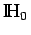
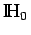
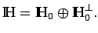
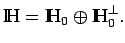

Der Nullvektor ist zu jedem Vektor aus  orthogonal. Es gilt:
orthogonal. Es gilt:
in mit x' eindeutig lösbar ist. kann dabei sogar durch eine konvexe, abgeschlossene nichtleere Teilmenge aus  ersetzt werden. Das Element x' heißt Projektion des Elements x auf , besitzt den kleinsten Abstand von x (zu ), und der Raum
ersetzt werden. Das Element x' heißt Projektion des Elements x auf , besitzt den kleinsten Abstand von x (zu ), und der Raum  ist orthogonal zerlegbar: 
ist orthogonal zerlegbar: 